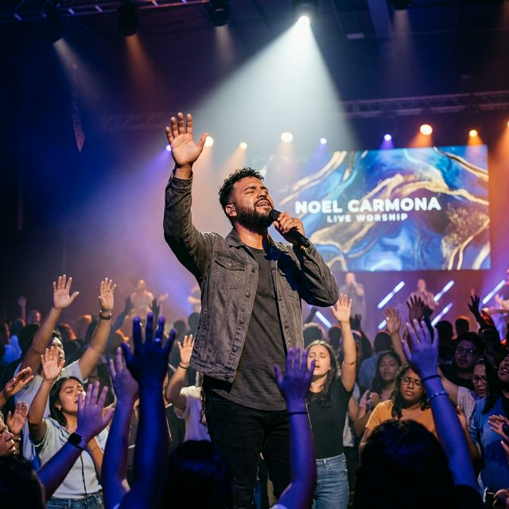
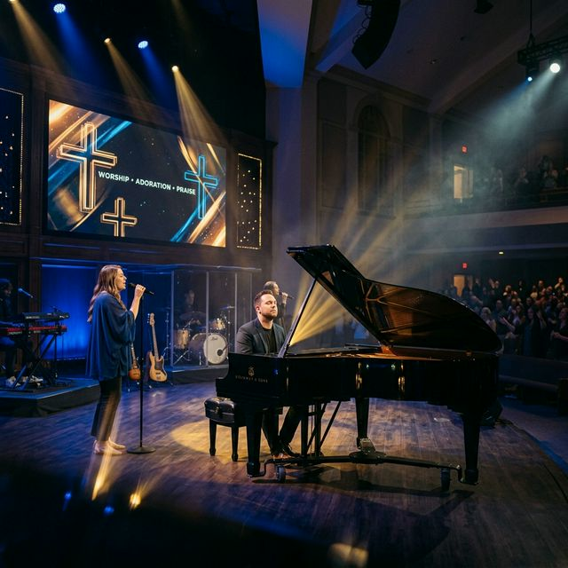
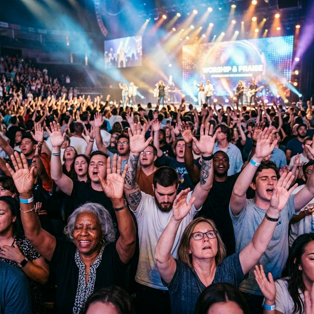

Llevando el mensaje de esperanza y fe a través de cada nota. Cantando para la Gloria de Dios.
Escuchar Música
Noel Carmona, nacido en Choluteca, Honduras, ha dedicado su vida a exaltar el nombre de Jesucristo. Tras un suceso que marcó su vida en 1993, donde perdió la visión física, Noel encontró en Dios una visión espiritual inquebrantable.
Su himno "Como el vuelo de un águila" se ha convertido en un estandarte de fe para miles en Latinoamérica, recordándonos que en la debilidad de Dios somos fuertes.
Hoy, Noel sigue recorriendo naciones, compartiendo testimonios de sanidad, restauración y el amor infinito del Padre.


Acompaña a Noel en sus próximas presentaciones y momentos de adoración.
Iglesia Central, San Pedro Sula, Honduras
Estadio Municipal, Choluteca, Honduras
Auditorio Betel, Tegucigalpa
Para invitaciones, eventos o mensajes de testimonio.
Correo: contacto@noelcarmona.com
WhatsApp: +504 9956-4283